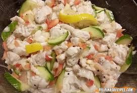
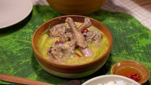
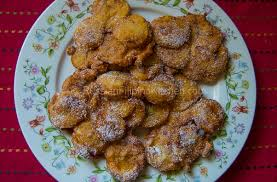

Food and Dining
Savor the flavors, where tradition and taste meet every meal
Antique offers a rich culinary experience that reflects its culture, heritage, and coastal abundance. Seafood is a highlight, with fresh catches like tilapia, prawns, crabs, and lobsters prepared in both traditional and modern dishes. Local favorites include kinilaw (fresh fish ceviche), laswa (vegetable soup), and budbod (sweet sticky rice dessert), offering a taste of authentic Antiqueño flavors.
Visitors can enjoy dining in seaside restaurants with fresh ocean views, cozy local eateries serving home-cooked specialties, or bustling town markets where street food and delicacies bring the flavors of the province to life. Don’t miss the chance to pair meals with local fruits like bananas, mangoes, and calamansi, or sip on freshly brewed coconut juice for a refreshing tropical treat. Antique’s food scene is not just about eating—it’s about experiencing the province’s culture, traditions, and warmth in every bite.
FOOD ADVENTURE CATALOGUE
Seafood Delight

Kinilaw (Raw Fish Ceviche)
Highlights: Fresh fish marinated in vinegar, calamansi, and spices
Locations: Coastal towns like Culasi, Pandan, and San Jose
Experience: Savor the tangy freshness of Antique’s daily catch

Grilled Prawns and Crabs
Highlights: Fresh seafood grilled over charcoal for smoky flavor
Locations: Beachside eateries in Mararison Island, Pandan Bay
Experience: Perfect for seaside dining with sunset views

Lobster and Fish Stews
Highlights: Rich, flavorful seafood soups and stews
Locations: Local restaurants in San Jose and Culasi
Experience: Authentic Antiqueño recipes handed down through generations
Traditional Antiqueño Dishes

Laswa (Vegetable Soup)
Highlights: Healthy soup made with local vegetables, herbs, and sometimes fish or shrimp
Locations: Homes, local eateries, town markets
Experience: A comforting taste of everyday Antiqueño life

Inubarang Manok (Chicken Stew with Coconut and Local Spices)
Highlights: Slow-cooked chicken with coconut milk, lemongrass, and spices
Locations: San Jose and Sibalom local restaurants
Experience: Rich, creamy, and aromatic, perfect for lunch or dinner

Bamboo Cooking / Tinolang Isda sa Kawayan
Highlights: Fish or meat slow-cooked inside bamboo for smoky flavor
Locations: Rural towns like Hamtic and Libertad
Experience: Traditional cooking method, deeply connected to nature and local culture
Local Desserts & Sweet Treats

Budbod (Sweet Sticky Rice Dessert)
Highlights: Sticky rice cooked with coconut milk, wrapped in banana leaves
Locations: Markets and roadside stalls in San Jose and Pandan
Experience: Perfect afternoon snack or souvenir treat

Puto (Steamed Rice Cakes)
Highlights: Soft, fluffy rice cakes, often served with cheese or salted egg
Locations: Town bakeries and local markets
Experience: Enjoy as breakfast, merienda, or snack while exploring the province

Maruya (Banana Fritters)
Highlights: Sweet, fried bananas coated in sugar
Locations: Pandan and Culasi street food stalls
Experience: Crispy on the outside, soft and sweet inside—a local favorite
Dining Experiences

Seaside Restaurants
Highlights: Fresh seafood and local dishes with ocean views
Locations: Mararison Island, Pandan Bay, Nogas Island
Activities: Sunset dining, seafood feasts, beach picnics

Town Markets and Eateries
Highlights: Affordable, authentic meals in bustling local settings
Locations: San Jose, Pandan, Culasi
Activities: Explore street food, try unique local flavors, meet locals

Homestays with Home-Cooked Meals
Highlights: Experience Antiqueño hospitality and traditional recipes
Locations: Sibalom, Libertad, Hamtic
Activities: Cooking demos, tasting meals made from fresh local ingredients